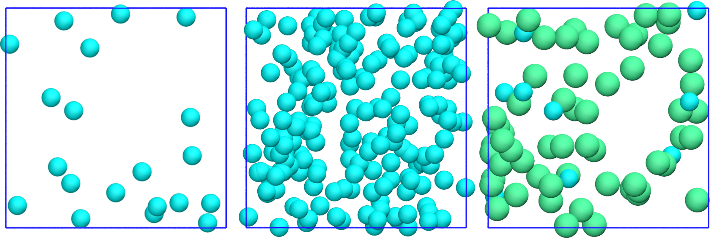

Print a data file¶
The positions of the atoms and the box size are printed to a LAMMPS data file.
Call the write_lammps_data method¶
Modify the __init__ method from the InitializeSimulation class to add the write_lammps_data method, which will be defined below.
def __init__(self,
number_atoms,
Lx,
epsilon=[0.1],
sigma=[1],
atom_mass=[1],
Ly=None,
Lz=None,
*args,
**kwargs):
super().__init__(*args, **kwargs)
self.number_atoms = number_atoms
self.Lx = Lx
self.Ly = Ly
self.Lz = Lz
self.dimensions = 3
self.epsilon = epsilon
self.sigma = sigma
self.atom_mass = atom_mass
self.calculate_LJunits_prefactors()
self.nondimensionalize_units()
self.define_box()
self.identify_atom_properties()
self.populate_box()
self.write_lammps_data(filename="initial.data")
Write the LAMMPS data file¶
Add the following method to the Outputs class.
def write_lammps_data(self, filename="lammps.data"):
f = open(filename, "w")
f.write('# LAMMPS data file \n\n')
f.write("%d %s"%(self.total_number_atoms, 'atoms\n'))
f.write("%d %s"%(np.max(self.atoms_type), 'atom types\n'))
f.write('\n')
for LminLmax, dim in zip(self.box_boundaries*self.reference_distance, ["x", "y", "z"]):
f.write("%.3f %.3f %s %s"%(LminLmax[0],LminLmax[1], dim+'lo', dim+'hi\n'))
f.write('\n')
f.write('Atoms\n')
f.write('\n')
cpt = 1
for type, xyz in zip(self.atoms_type,
self.atoms_positions*self.reference_distance):
q = 0
f.write("%d %d %d %.3f %.3f %.3f %.3f %s"%(cpt, 1, type, q, xyz[0], xyz[1], xyz[2], '\n'))
cpt += 1
Test the code¶
We can take advantage of the current code and print the positions of the atoms in data files.
import os
from MolecularDynamics import MolecularDynamics
md = MolecularDynamics(number_atoms=[10, 60],
Lx=30,
sigma=[3, 6],
epsilon=[0.1, 0.1],
atom_mass=[1, 1],
data_folder = "md-output/")
md.run()
The following figure shows systems with different numbers of atoms. VMD was used for generating the snapshot, you can find a VMD tutorial here.

Figure: Systems generated with 3 different particle numbers. In all 3 cases, the box is a cube of volume \((3~\text{nm})^3\). Left: 20 atoms of type 1. Middle: 200 atoms of type 1. Right: 10 atoms of type 1, and 60 atoms of type 2.